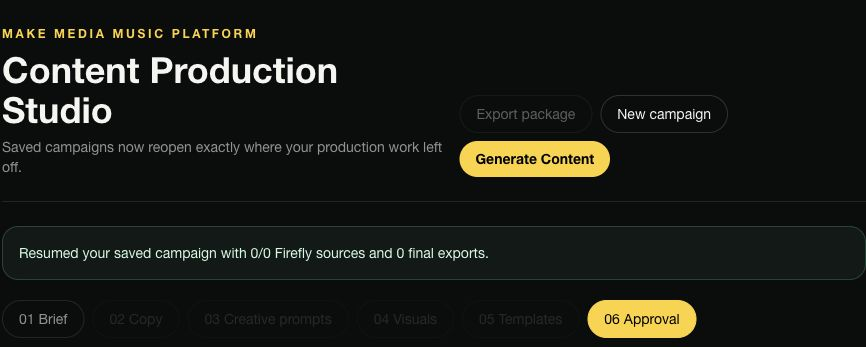
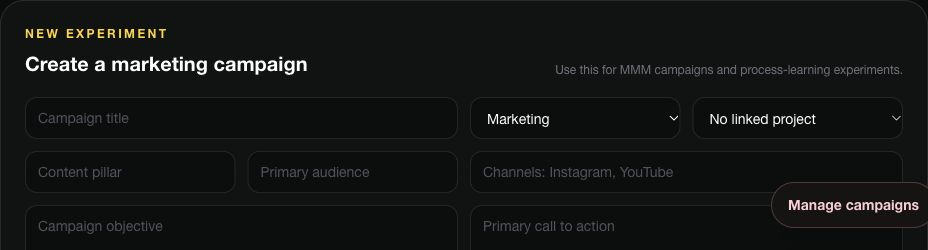

Make Media Music Platform
An evolving operating workspace for music education, creative services, relationships, studio partnerships, catalog administration, and sync licensing. Originally developed as BE Music OS.
The product connects people, projects, opportunities, tasks, and creative production in one workspace. Its repository documents workspace roles, tenant isolation, imports, and collaboration.
Content Studio — A staged interface for briefs, copy, creative prompts, visuals, templates, and approval, with campaign-specific Firefly and Adobe Express asset handoffs. Saved source visuals and completed final exports were verified in an existing campaign.
Marketing Lab — Campaign objectives, post schedules, permission and approval fields, results capture, learning notes, and reusable playbooks.
Trelly Mo Universe — A creative-production use case linking music, visual identity, storytelling, and campaign planning. Unreleased artwork and story material remain private.
Authenticated Dashboard, Content Studio, and Marketing Lab views were inspected on November 1, 2026. Saved output verified: one sync-education campaign contains 7 Firefly source visuals and 7 final Adobe Express exports. Fresh generation and public publishing were not rerun. Story Studio’s landing page currently errors; that does not negate completed production work.
Project perspective
Product direction: bring fragmented creative-business work into a coherent operating system. Technical emphasis: structured data, workspace permissions, workflow clarity, and iterative development. The showcase contains no customer records, private source code, or credentials.

